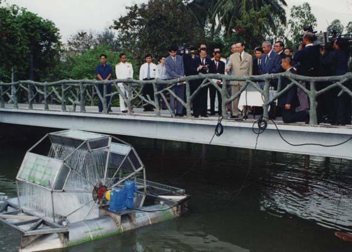

โครงการกังหันน้ำชัยพัฒนา
กังหันน้ำชัยพัฒนา คือ เครื่องกลเติมอากาศแบบทุ่นลอยหมุนช้าสำหรับบำบัดน้ำเสีย ซึ่งในหลวง ร.9 ทรงมีพระราชดำริขึ้นเพื่อใช้ประโยชน์ในการบำบัดน้ำเสียและใช้ปรับปรุงคุณภาพน้ำตามสถานที่ต่าง ๆ ทั่วทุกภูมิภาค สารอินทรีย์หรือสิ่งปฏิกูลต่างๆ ในน้ำจะถูกย่อยสลายด้วยจุลินทรีย์ซึ่งมีอยู่ 2 ชนิด ได้แก่ จุลินทรีย์ที่ใช้ออกซิเจน (aerobic bacteria) และจุลินทรีย์ที่ไม่ใช้ออกซิเจน (anaerobic bacteria) หากในน้ำมีออกซิเจน (O2) เพียงพอจะทำให้จุลินทรีย์ที่ใช้ออกซิเจนย่อยสลายสารได้ดี เกิดคาร์บอนไดออกไซด์ (CO2) และน้ำ (H2O) ออกมา แต่หากปริมาณ O2 ไม่เพียงพอ จุลินทรีย์ที่ไม่ใช้ออกซิเจนจะเข้ามาทำงานแทนที่และเกิดแก๊สไดไฮโดรเจนซัลไฟด์ (H2S) หรือแก๊สไข่เน่าออกมา เกิดปัญหาน้ำเน่าเสียส่งกลิ่นเหม็น ดังนั้น การบำบัดน้ำเสียเบื้องต้นคือการเติม O2 ที่ละลายในน้ำให้เพียงพอต่อการใช้ย่อยสลายสารอินทรีย์ของจุลินทรีย์ที่ใช้ออกซิเจน หลักการเติม O2 ในน้ำด้วยกังหันชัยพัฒนา มีดังนี้ เมื่อมอเตอร์หมุน ซองน้ำจะตักน้ำเสียขึ้นมาสัมผัสกับอากาศที่มี O2 แล้วปล่อยเป็นฝอยลงมาเพื่อเพิ่มพื้นที่ผิวสัมผัสกับอากาศ ซองน้ำเคลื่อนที่อัดอากาศลงในชั้นน้ำ เพิ่มปริมาณออกซิเจนให้ละลายในน้ำได้อีกทางหนึ่ง ซองน้ำเคลื่อนที่พัดมวลน้ำเดิมออกไปแล้วตักน้ำเสียใหม่ขึ้นมาบำบัดอย่างต่อเนื่อง กังหันน้ำชัยพัฒนา ได้รับสิทธิบัตรจากกรมทรัพย์สินทางปัญญา เมื่อวันที่ 2 ก.พ. 2536 จึงนับว่าเป็นพระมหากษัตริย์ไทยพระองค์แรกที่ได้รับการถวายสิทธิบัตร และยังเป็นครั้งแรกของโลกอีกด้วย ต่อมาจึงได้มีการกำหนดให้วันที่ 2 ก.พ. ของทุกปีเป็น “วันนักประดิษฐ์” อ้างอิง: https://goo.gl/sZM5HF, https://goo.gl/Qexupz, https://goo.gl/sMZCym